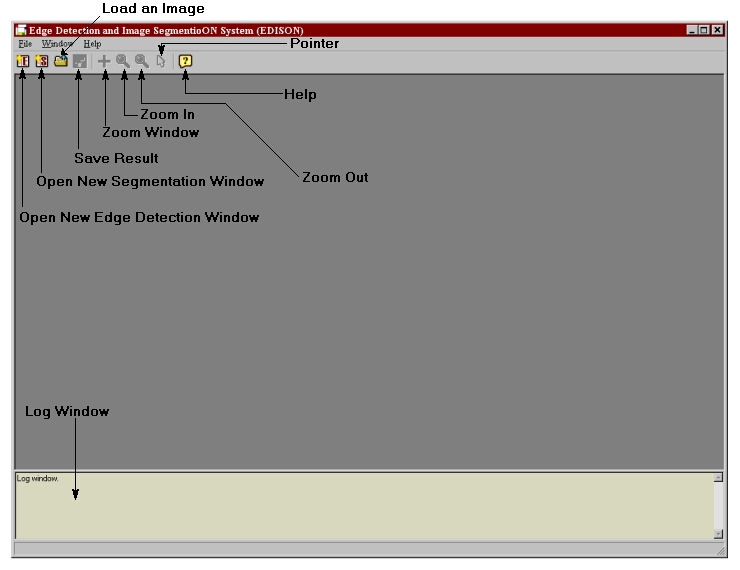
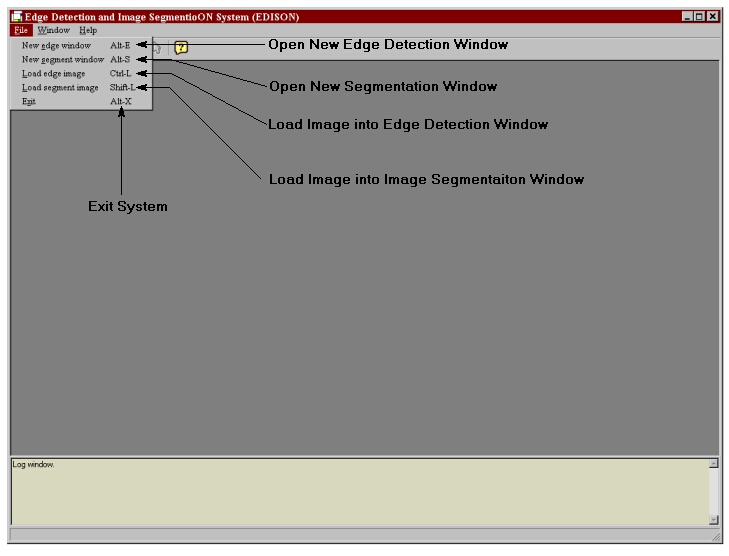
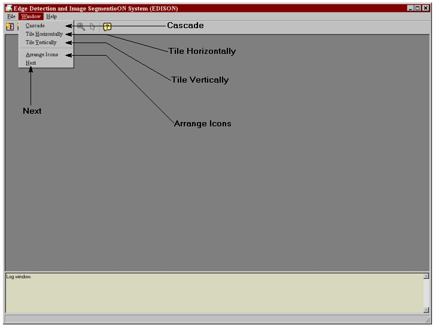
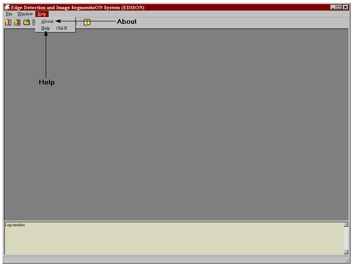
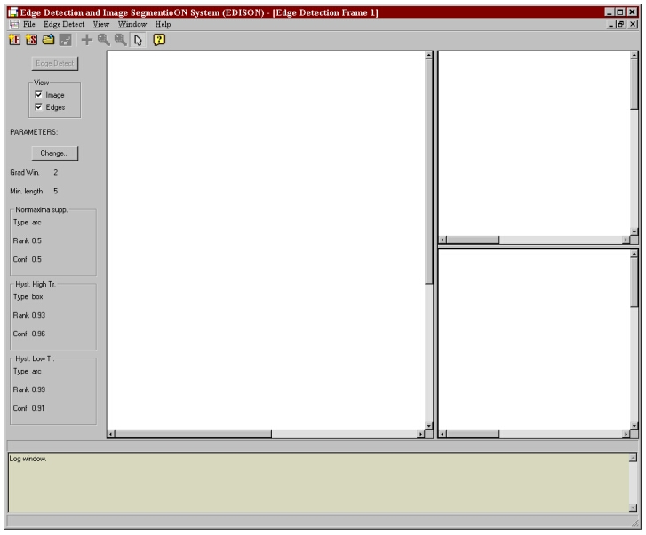
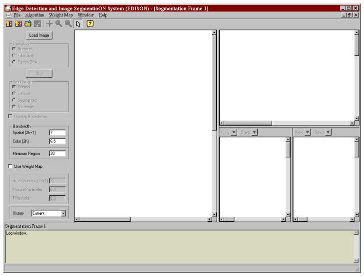

The system is built using two separate modules: a confidence based edge detector and a mean shift based image segmenter. General system use is outlined below.

Open New Edge Detection Window
Opens a new edge detection window. An image is not loaded.
Open New Segmentation Window
Opens a new segmentation window. An image is not loaded.
Load an Image
Loads an image into a new edge detection and segmentation window for processing.
Save Result
A result may be saved only after image processing is performed. When performing edge detection the result is an edge map. Upon performing segmentation the segmented image and region boundaries may be saved.
Zoom Window
Defines a small zoom window above the current image, centered about the mouse cursor.
Zoom In
Zoom into current image.
Zoom Out
Zoom out of current image.
Pointer
Restores the mouse cursor to a pointer when over the current image.
Help
Opens the help window.
Log Window
Displays the system progress and state. The edge detection and segmentation modules use the window log to display messages that document their progress. They also use this log to display errors. The log is used by the general system to report the success or failure of an operation (e.g. saving a result or loading an image). The contents of the log window are copied to the file 'filelog.txt'.
NOTE: The current image is the image being viewed in an edge detection or image segmentation window. For example, the current image may be the input image or may display the result.
File Menu

Open New Edge Detection Window
Opens a new edge detection window. An image is not loaded.
Open New Segmentation Window
Opens a new segmentation window. An image is not loaded.
Load Image into Edge Detection Window
Loads an image to perform edge detection.
Load Image into Segmentation Window
Loads an image to perform image segmentation.
Exit System
Exits the system. If processing windows are open upon exit, a prompt will be displayed to confirm the action.
Window Menu

Cascade
Cascades open edge detection and segmentation windows.
Tile Horizontally
Tiles open edge detection and segmentation windows horizontally.
Tile Vertically
Tiles open edge detection and segmentation windows vertically.
Arrange Icons
Places minimized window icons at the bottom of the working area in an orderly fashion.
Next
Redirects focus to the next edge detection or image segmentation window.
Help Menu

Help
Opens the help window.
About
Provides a brief description of the system.
Edge Detection/Segmentation Windows
Edge detection is performed by opening an edge window:

Similarly, image segmentation is performed using a segmentation window:

The use of these interfaces is detailed by their corresponding topics listed in the table of contents. top